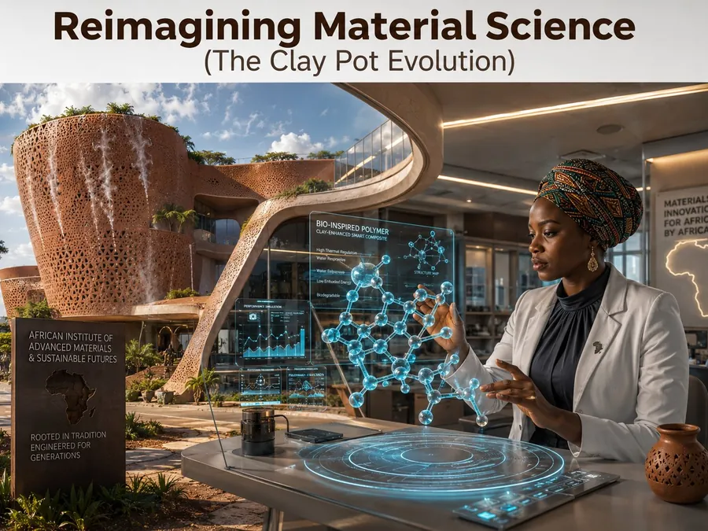

إعادة التفكير في أفريقيا. استعادة الذكاء. إعادة تخيّل المستقبل.
منصة إعلامية قائمة على البحث، تستكشف التنمية والمعرفة والحوكمة والثقافة والإمكانات في أفريقيا من منظور يتمحور حول أفريقيا.

كيف تعلّمت أن ترى أفريقيا؟
سبعة أسئلة، في نحو تسعين ثانية. اكتشف أيّ الأنماط الخمسة لبُناة مستقبل أفريقيا هو نمطك، واحصل على البيان المجاني.
خذ اختبار Africa Lensمجاني. بلا أي دفع، أبدًا.
Rethinking Africa with Dr. Damola تجمع البحث والتجربة المعيشة والأصوات الأفريقية لدراسة الأنظمة التي تشكّل القارة، واستكشاف مسارات عملية نحو استقلالية أفريقيا وتميّزها ونهضتها.
Trained Away
لماذا يُعِدّ التعليم في أفريقيا الشباب غالبًا لمغادرة الفرص المحلية بدلًا من تطويرها، وما الذي سيفعله تعليمٌ مصمَّم انطلاقًا من الواقع الأفريقي بدلًا من ذلك.
أفريقيا ليست خالية من الذكاء
تحدّيها أن جزءًا كبيرًا من ذكائها لم يُعترف به ولم يُصقَل ولم يُؤسَّس له ولم يُموَّل ولم يتحوّل إلى قوة جماعية بالقدر الكافي. تتجاوز هذه المنصة وصف مشكلات أفريقيا: إنها تسأل كيف نشأت، وما الذي يُبقيها، وأيّ معرفة أُهملت، وما البدائل العملية التي يمكن بناؤها. اقرأ المزيد عن الرؤية.
هذا ليس الماضي. هذا علمٌ قُطِع مساره.
الجرّة الفخارية ليست رمزًا للفقر؛ بل هي جهاز تبريد حراري يعمل دون كهرباء، تطوّر عبر أجيال من التجريب. وباستخدام الصور التخيّلية بالذكاء الاصطناعي، نُبيّن كيف كان يمكن أن تبدو العلوم الأفريقية اليوم لو لم يُقطَع تطوّرها بالعنف.


ما قُطِع يمكن استعادته. وما أُجِّل يمكن استرداده.
القصة التي نعيد التفكير فيها



ستة محاور رئيسية
التعليم والمعرفة
كيف يشكّل التعليم الهوية الأفريقية والطموح والعمل والإمكانات.
الحوكمة والمؤسسات
كيف يمكن للدول الأفريقية أن تبني أنظمة موثوقة وخاضعة للمساءلة ومتجذّرة في ثقافتها.
المعرفة الأصلية والابتكار
كيف يمكن للمعرفة الموروثة أن تصبح علمًا ومشاريع وصناعة معاصرة.
العمل والإنتاج والتميّز
لماذا تستورد أفريقيا الخبرة، وكيف يمكن تعزيز القدرات المحلية.
الثقافة والهوية والاستقلالية الأفريقية
كيف تشكّل اللغة والإعلام والدين والقوى العالمية نظرة الأفارقة إلى أنفسهم.
مستقبلات أفريقيا
كيف يمكن للأفارقة تصميم مدن ومؤسسات وتقنيات واقتصادات متجذّرة في واقعهم.
ما المعرفة التي امتلكها والداك ولم يرثها جيلك؟
أرسل إجابتكتُنشر إجابات مختارة على الموقع بإذن أصحابها.
أصوات كثيرة، وطاولة واحدة
باحثون وحرفيون وطلاب ورواد أعمال وكبار سنّ وصنّاع سياسات وأبناء الشتات. كل شهر تسلّط هذه المنصة الضوء على صوت أفريقي واحد والمعرفة التي يحملها. إن كنت أنت، أو شخصًا تعرفه، فأخبرنا.
الأعمال المكتوبة
مقالات وملخصات أبحاث وقوائم قراءة وموجزات قابلة للتنزيل ترافق الحلقات. وهذا ما يميّز المنصة عن مجرد التعليق: كل ادّعاء يمكن تتبّعه إلى مصدره.
لا يمكن لصوت واحد أن يتخيّل مستقبل أفريقيا
أحضر بحثك أو تجربتك أو سؤالك أو قصتك إلى هذا الحوار.
تعرّف على الدكتورة دامولا
Dr Oluwakemi Damola Adejumo-Ayibiowu

الدكتورة دامولا خبيرة في اقتصاديات التنمية، وباحثة ذات منظور أفريقي المركز، ومتخصصة متعددة المجالات في الذكاء الاصطناعي، واستراتيجية في السياسات العامة، وفنانة في موسيقى الإنجيل، تمتلك أكثر من 25 عامًا من الخبرة في الحكومة والأوساط الأكاديمية والاستشارات الدولية. ومن خلال Rethinking Africa تُخرج المعرفة الأكاديمية من الدوائر المغلقة إلى النقاش العام.
للباحثين والطلاب وصنّاع السياسات والمهنيين والمبدعين وقادة المجتمعات وأبناء الشتات، ولكل من يلتزم بنهضة أفريقيا الفكرية والتنموية.
انضم إلى الألف المؤسّسين
كن من أول ألف عضو في حركة لاستعادة الذكاء الأفريقي والاستقلالية الأفريقية. اكتشف وجهات نظر تتمحور حول أفريقيا وتقوم على البحث، وشاهد حوارات مع باحثين وممارسين، واحصل على الحلقات والمقالات ودعوات الفعاليات الجديدة، بدءًا بسلسلة 7 أيام لإعادة التفكير المجانية.
لا رسائل مزعجة. يمكنك إلغاء الاشتراك في أي وقت.
ساعد هذه المبادرة على النمو
Rethinking Africa with Dr. Damola مبادرة مستقلة. دعمك يموّل البحث والإنتاج والترجمة وتوثيق المعرفة الأفريقية، ويُبقي هذه المنصة مجانية للطلاب والمجتمعات في أنحاء القارة.
تدعم المساهمات مبادرة تعليمية مستقلة، وهي ليست تبرعات خيرية قابلة للخصم الضريبي. يُنشر ملخص سنوي لكيفية استخدام الأموال على هذا الموقع.
كن شريكًا لـ Rethinking Africa
ندعو الجامعات ومراكز البحث والمؤسسات الثقافية والمؤسسات الإعلامية وهيئات التنمية إلى التعاون في مشاريع البحث والإعلام والتواصل مع الجمهور.
ابدأ حوارًا